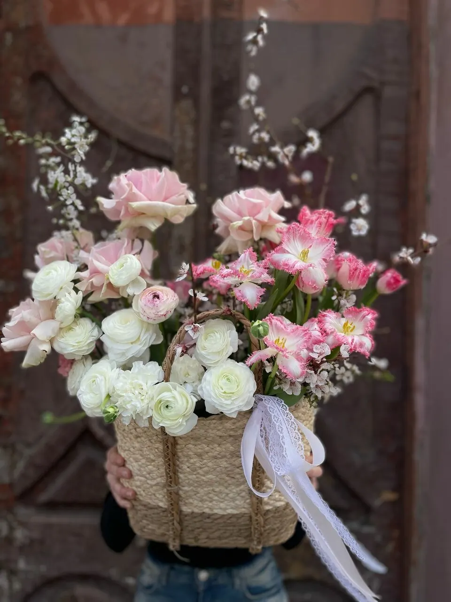
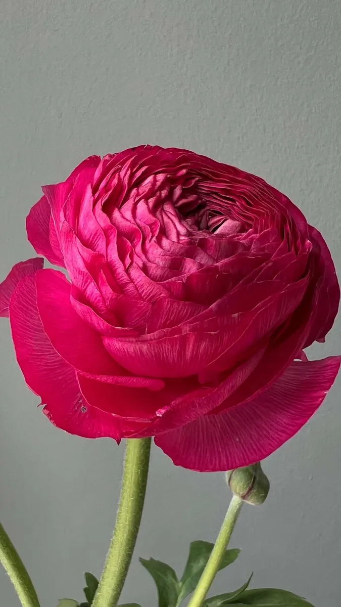
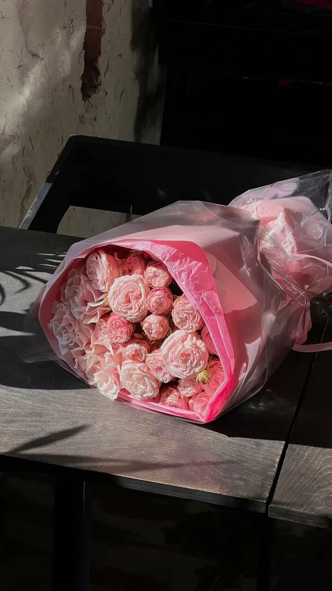

Цветочный магазин в Краснодаре · букеты и композиции
Букеты и цветы в Краснодаре: свежие, с доставкой
Свежие букеты, корзины и композиции с доставкой по городу. Подскажем с составом и согласуем время доставки.

- Рейтинг 5,0 на Яндекс.Картах
- Корзины, букеты, композиции
- Согласуем время доставки
Цены с карточки
Цены с карточки на Яндекс.Картах. Точный состав и сумму уточняйте при заказе.
Букеты
- Чудесная цветочная корзинатюльпаны, розы и ранункулюсыот 7 000 ₽
- Воздушный букетот 6 000 ₽
- Яркая раскидистая композицияот 4 500 ₽
Другие букеты и стоимость доставки уточняйте при заказе.
Как заказать
- 01
Повод и бюджет
Напишите, для кого букет и на какую сумму.
- 02
Состав
Флорист подскажет варианты и состав.
- 03
Время
Согласуем время доставки или самовывоза.


Как работаем
Подскажем с составом
Поможем выбрать цветы под повод, в том числе найти нужные, например ранункулюсы.
Доедет свежим
Букет едет в коробке с водой, чтобы цветы не вяли в жару.
Время согласуем
Позвоним и согласуем время доставки с получателем или с вами.
Контакты
- Адрес
- Рашпилевская улица, 46, Краснодар
- Часы
- Пн–Ср 10:00–21:00, остальные дни – по телефону
- Телефон
- +7 (928) 401-08-08